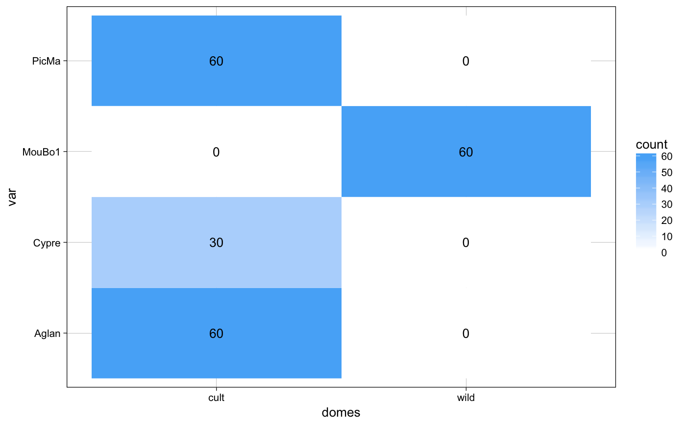
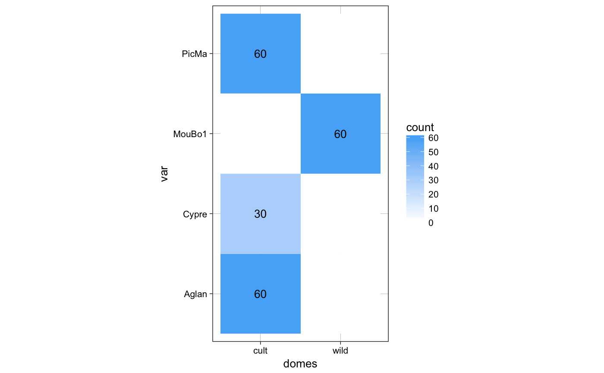
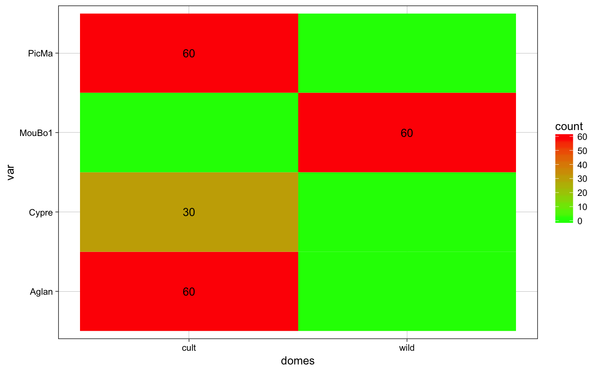
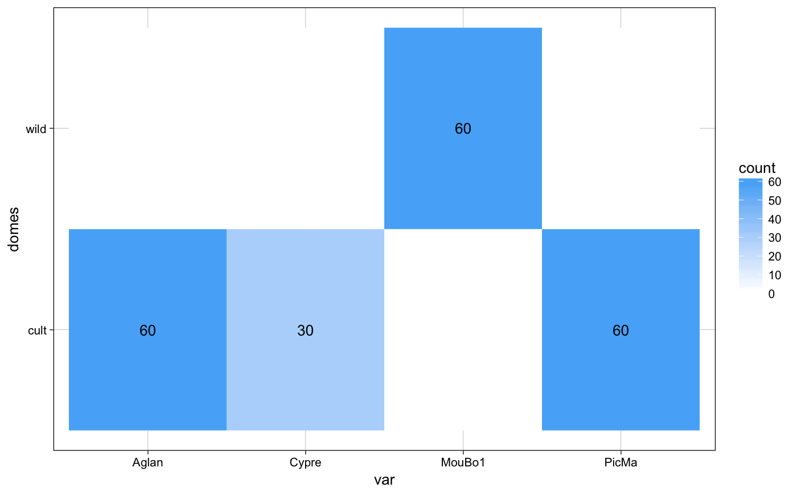

An utility that plots a confusion matrix of sample size (or a barplot) for every object with a $fac. Useful to visually how large are sample sizes, how (un)balanced are designs, etc.
plot_table(x, fac1, fac2 = fac1, rm0 = FALSE)
| x | any object with a $fac slot (Coo, Coe, PCA, etc.) |
|---|---|
| fac1 | the name or id of the first factor |
| fac2 | the name of id of the second factor |
| rm0 | logical whether to print zeros |
a ggplot2 object
Other plotting functions: coo_arrows,
coo_draw, coo_listpanel,
coo_lolli, coo_plot,
coo_ruban, ldk_chull,
ldk_confell, ldk_contour,
ldk_labels, ldk_links,
plot_devsegments
plot_table(olea, "var")plot_table(olea, "domes", "var")gg <- plot_table(olea, "domes", "var", rm0 = TRUE) gg#> #>gg + coord_flip()